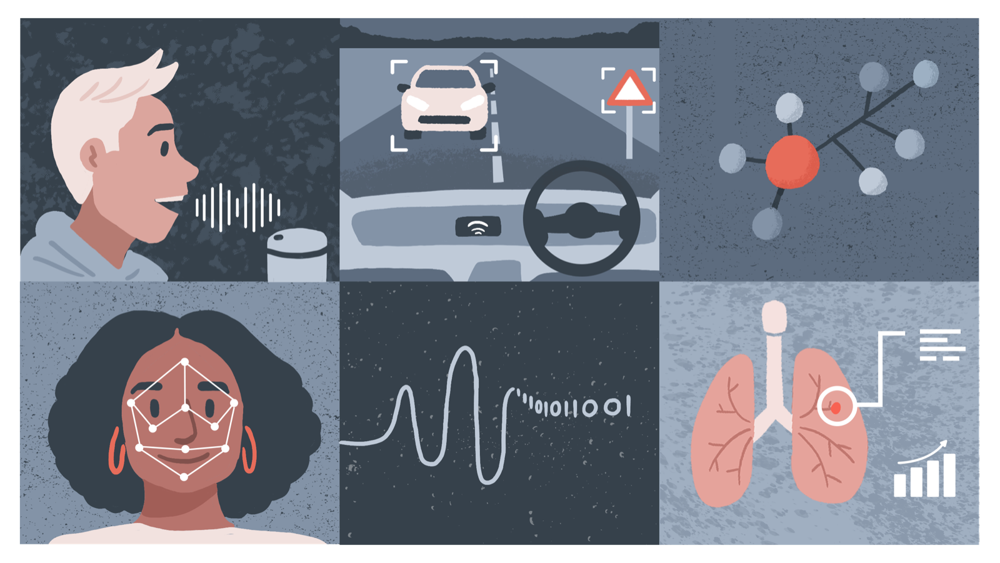

Responsible Data Science and AI¶

Chapter Outline¶
- Responsible Data Science and AI
- Introducing the Project Lifecycle (A Sociotechnical Approach)
- Roles and Responsibilities
- Understanding Bias)
Chapter Summary
This chapter builds on the content of the previous one by applying many of the central concepts to research and innovation in data science and AI. First, we will look at what being responsible means in the context of data science and AI, and explore several principles that can help get us started with operationalising the term 'responsibility'. Next, we explore a simple model that has been designed to help with reflection and deliberation throughout the project lifecycle, and also look at what this model means for individual roles within a project, as well as a broader notion of collective responsibility. Finally, we examine the concept of 'bias', which will play an important role in the subsequent chapters.
Learning Objectives
In this chapter, you will:
- Explore what differentiates responsible data science and AI from responsible research and innovation more generally.
- Examine a model of a typical project lifecycle to better appreciate why individual responsibility is often insufficient in the context of data science and AI.
- Understand the differences between social, statistical, and cognitive biases, and why they all matter for responsible data science and AI.